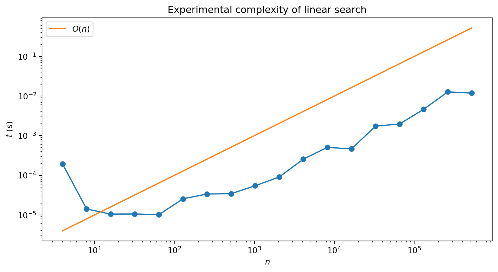
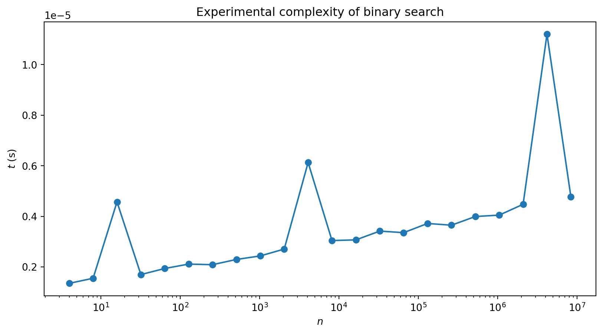
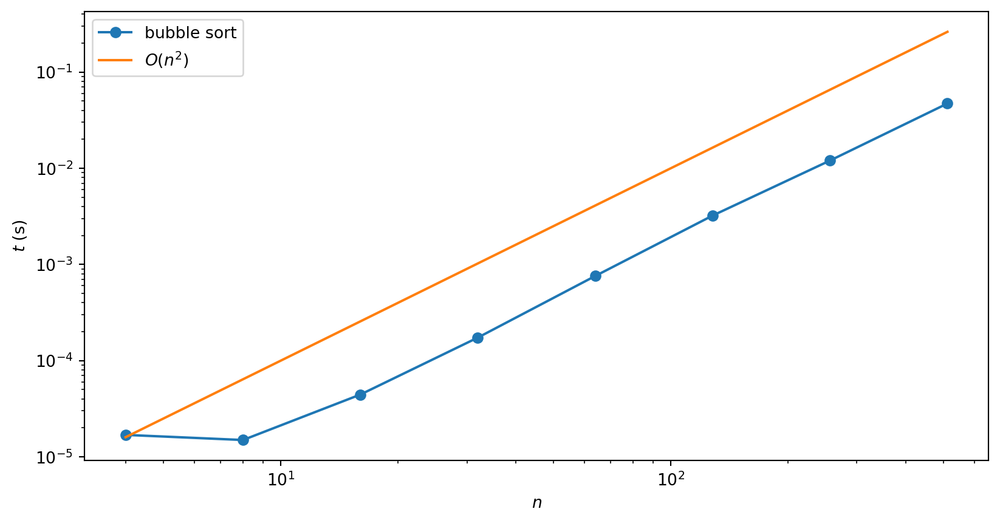
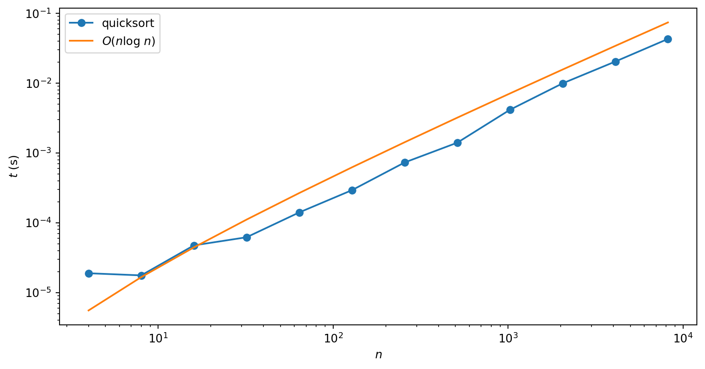
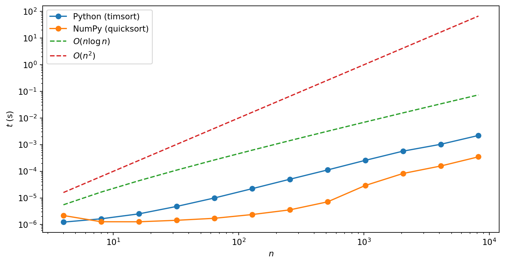

| × | 1 3 |
2 2 |
3 1 |
|
|---|---|---|---|---|
_ _ 3 |
_ 2 6 |
1 4 9 |
2 6 |
3 |
| 3 | 9 | 4 | 8 | 3 |
For \(n\) digits have to perform \(n^2\) single digit multiplications
Add together \(n\) resulting \(n\)-digit numbers
Overall number of operations is proportional to \(n^2\): \(\times 2\) number of digits will make problem four times harder
Exactly how long this takes will depend on many things, but you can’t get away from the basic quadratic scaling law of this algorithm
The complexity of a problem refers to this scaling of the number of steps involved
Difficulty of particular task (or calculation) may vary considerably — \(100\times 100\) is easy, for example
Instead ask about how a particular general algorithm performs on a class of tasks
In CS multiplication of \(n\) digit numbers is a problem. Particular pair of \(n\) digit numbers is an instance
Above algorithm for multiplication that has quadratic complexity, or “\(O(n^2)\) complexity” (say “order \(n\) squared”).
Description only keeps track of how the difficulty scales with the size of the problem
Allows us to gloss over what exactly we mean by a step. Are we working in base ten or binary? Looking the digit multiplications up in a table or doing them from scratch?
Don’t have to worry about how the algorithm is implemented exactly in software or hardware, what language used, and so on
It is important to know whether our code is going to run for twice as long, four times as long, or \(2^{10}\) times as long
Consider search: finding an item in an (unordered) list of length \(n\). How hard is this?
Have to check every item until you find the one you are looking for, so this suggests the complexity is \(O(n)\)
Could be lucky and get it first try (or in first ten tries). The best case complexity of search is \(O(1)\).
Worst thing that could happen is that the sought item is last: the worst case complexity is \(O(n)\)
On average, find your item near the middle of the list on attempt \(\sim n/2\), so the average case complexity is \(O(n/2)\). This is the same as \(O(n)\) (constants don’t matter)
| Complexity | |
|---|---|
| Best case | \(O(1)\) |
| Worst case | \(O(n)\) |
| Average case | \(O(n)\) |
We can check the average case performance experimentally by using randomly chosen lists:

“Experimental noise” arises because don’t have full control over exactly what computer is doing at any moment: lots of other processes running.
Takes a while to reach the linear regime: overhead associated with starting the program
You’ve already learnt a lot of algorithms in mathematics (even if you don’t think of them this way)
Let’s revisit some them through lens of computational complexity
\[ \begin{align} \sum_{j=1}^n M_{ij}v_j \end{align} \]
Sum contains \(n\) terms, and have to perform \(n\) such sums
Thus the complexity of this operation is \(O(n^2)\).
\[ \sum_{j} A_{ij}B_{jk} \]
\[ M_1\left(M_2\cdots \left(M_n \mathbf{v}\right)\right) \]
Wikipedia has a nice summary of computational complexity of common mathematical operations
If algorithm has complexity \(O(n^p)\) for some \(p\) it has polynomial complexity
Useful heuristic is that if you have \(p\) nested loops that range over \(\sim n\), the complexity is \(O(n^p)\)
Seems obvious that for search you can’t do better than linear
What if the list is ordered? (numerical for numbers, or lexicographic for strings)
Extra structure allows gives binary search that you may have seen before
Look in middle of list and see if item you seek should be in the top half or bottom half
Take the relevant half and divide it in half again to determine which quarter of the list your item is in, and so on
def binary_search(x, val):
"""Peform binary search on x to find val. If found returns position, otherwise returns None."""
# Intialise end point indices
lower, upper = 0, len(x) - 1
# If values is outside of interval, return None
if val < x[lower] or val > x[upper]:
return None
# Perform binary search
while True:
# Compute midpoint index (integer division)
midpoint = (upper + lower)//2
# Check which side of x[midpoint] val lies, and update midpoint accordingly
if val < x[midpoint]:
upper = midpoint - 1
elif val > x[midpoint]:
lower = midpoint + 1
elif val == x[midpoint]: # found, so return
return midpoint
# In this case val is not in list (return None)
if upper < lower:
return None
If length is a power of 2 i.e. \(n=2^p\), we are going to need \(p\) bisections to locate our value
Complexity is \(O(\log n)\) (we don’t need to specify the base as overall constants don’t matter)
Exponentiation is problem of raising a number \(b\) (the base) to the \(n\)th power
Multiply the number by itself \(n\) times: linear scaling
There’s a quicker way, since \[ \begin{align} b^2 &= b\cdot b\\ b^4 &= b^2\cdot b^2\\ b^8 &= b^4\cdot b^4 \end{align} \]
Only have to do three multiplications!
Exponentiation by this method (called exponentiation by squaring) is \(O(\log n)\)
To handle powers that aren’t a power of \(2\)
\[ b^n = \begin{cases} b^{n/2} \cdot b^{n/2} & \text{if $n$ even} \\ b \cdot b^{n-1} & \text{if $n$ odd} \end{cases} \]
def exp(b, n):
if n == 0:
return 1
elif n % 2 == 0:
return exp(b, n // 2)**2
else:
return b * exp(b, n - 1)
exp(2, 6)64Implementation is recursive: exp(b, n) calls itself
Only calls itself with lower values of the exponent \(n\)
Process continues until we hit \(n=0\), and 1 is returned by the first part of the if ... else
def exp_no_base_case(b, n):
if n % 2 == 0:
return exp_no_base_case(b, n // 2)**2
else:
return b * exp_no_base_case(b, n - 1)
exp_no_base_case(2, 6)--------------------------------------------------------------------------- RecursionError Traceback (most recent call last) Cell In[6], line 7 4 else: 5 return b * exp_no_base_case(b, n - 1) ----> 7 exp_no_base_case(2, 6) Cell In[6], line 3, in exp_no_base_case(b, n) 1 def exp_no_base_case(b, n): 2 if n % 2 == 0: ----> 3 return exp_no_base_case(b, n // 2)**2 4 else: 5 return b * exp_no_base_case(b, n - 1) Cell In[6], line 5, in exp_no_base_case(b, n) 3 return exp_no_base_case(b, n // 2)**2 4 else: ----> 5 return b * exp_no_base_case(b, n - 1) Cell In[6], line 3, in exp_no_base_case(b, n) 1 def exp_no_base_case(b, n): 2 if n % 2 == 0: ----> 3 return exp_no_base_case(b, n // 2)**2 4 else: 5 return b * exp_no_base_case(b, n - 1) Cell In[6], line 5, in exp_no_base_case(b, n) 3 return exp_no_base_case(b, n // 2)**2 4 else: ----> 5 return b * exp_no_base_case(b, n - 1) Cell In[6], line 3, in exp_no_base_case(b, n) 1 def exp_no_base_case(b, n): 2 if n % 2 == 0: ----> 3 return exp_no_base_case(b, n // 2)**2 4 else: 5 return b * exp_no_base_case(b, n - 1) Cell In[6], line 3, in exp_no_base_case(b, n) 1 def exp_no_base_case(b, n): 2 if n % 2 == 0: ----> 3 return exp_no_base_case(b, n // 2)**2 4 else: 5 return b * exp_no_base_case(b, n - 1) [... skipping similar frames: exp_no_base_case at line 3 (2971 times)] Cell In[6], line 3, in exp_no_base_case(b, n) 1 def exp_no_base_case(b, n): 2 if n % 2 == 0: ----> 3 return exp_no_base_case(b, n // 2)**2 4 else: 5 return b * exp_no_base_case(b, n - 1) RecursionError: maximum recursion depth exceeded
Exponentiation can be done efficiently
Finding the logarithm can’t!
More precisely, work with modular arithmetic e.g. do all operations modulo some prime \(p\)
Then for \(b, y=0,\ldots p-1\) we are guaranteed that there is some number \(x\) such that \(b^x=y\): discrete logarithm
Finding this number is hard: no known method for computing it efficiently
Certain public-key cryptosystems are based on the difficulty of the discrete log (for carefully chosen \(b\), \(p\) and \(y\))
\[ \text{Fib}(n) = \text{Fib}(n-1) + \text{Fib}(n-2) \]
233First two terms are base cases
Actually a terrible way of calculating \(\text{Fib}(n)\)!
Complexity of this algorithm actually grows exponentially with \(n\): because of branching structure algorithm is \(O(2^n)\).
Calculating Fibonacci numbers the sensible way (i.e. the way you do it in your head) gives an \(O(n)\) algorithm
Exp complexity not just down to poor algos!
Possible to come up with problems that definitely can’t be solved faster than exponentially
Towers of Hanoi is one famous example
Simulation of quantum system with \(n\) qubits believed to have complexity \(O(2^n)\)
Big part of hype surrounding quantum computers
\(\exists\) problems whose solution, once found, is easy to check
Discrete logarithm is one example
Checking involves exponentiation, and exponentiation is \(O(\log n)\) in size of numbers, or \(O(n)\) in number of digits
Question of whether efficient (i.e. polynomial) algorithms always exist for problems which are easy to check the outstanding problem in computer science: P vs NP
P is class of problems with polynomial time algorithms and NP is class with solutions checkable in polynomial time
Are these two classes the same or do they differ?
[4, 20, 48, 50, 65, 73, 75, 77, 86, 91]What is Python actually doing?
Many sorting algorithms. See Wikipedia for an extensive list
Repeatedly pass through array, comparing neighbouring pairs of elements and switching them if they are out of order
After first pass the largest element is in the rightmost position (largest index)
Second pass can finish before reaching last element, as it is already in place
After second pass final two elements are correctly ordered
Continue until array is sorted
What is complexity of bubble sort?
There are two nested loops: one to implement each pass and one to loop over the \(n-1\) passes
Suggests that complexity is quadratic i.e. \(O(n^2)\). A numerical check verifies this:

If you watch the animation of bubble sort you might get a bit bored, as it slowly carries the next largest element to the end
Can we do better?
How fast could a sorting algorithm be?
Can’t be faster than \(O(n)\): at the very least one has to look at each element
While one can’t actually achieve linear scaling, many algorithms which achieve the next best thing: \(O(n\log n)\)
Uses two key ideas:
def quicksort(A, lo=0, hi=None):
"Sort A and return sorted array"
# Initialise data the first time function is called
if hi is None:
hi = len(A) - 1
A = A.copy()
# Sort
if lo < hi:
p = partition(A, lo, hi)
quicksort(A, lo, p - 1)
quicksort(A, p + 1, hi)
return A
def partition(A, lo, hi):
"Partitioning function for use in quicksort"
pivot = A[hi]
i = lo
for j in range(lo, hi):
if A[j] <= pivot:
A[i], A[j] = A[j], A[i]
i += 1
A[i], A[hi] = A[hi], A[i]
return i
Interesting example of differences between best, worst and average case complexities
Worst case occurs when the array is already sorted
Pivot is chosen as the last element of the array, so one partition is always empty in this case
Instead of problem being cut roughly in half at each stage, it is only reduced in size by 1
NumPy’s sort uses quicksort, whereas Python’s sorted uses a hybrid algorithm called Timsort, which also has \(O(n\log n)\) average case performance

Quicksort, binary search, and exponentiation by squaring are all examples of divide and conquer algorithms
Achieve performance by breaking task into two (or more) sub-problems of same type
Recall “obvious” method for multiplication has quadratic complexity
Try a divide and conquer type approach by splitting an \(n\)-digit number as follows \[ x = x_1 B^m + x_0 \]
\(B\) is base and \(m=\lceil n / 2\rceil\) works best (as we’ll see)
In base 10 \(x=12345\) is written as \(12 * 1000 + 345\)
\[ xy = x_1 y_1 B^{2m} + (x_1 y_0 + x_0 y_1) B^{m} + x_0 y_0, \]
Requires computation of four products
Now divide and conquer, splitting up \(x_0\), \(x_1\), \(y_0\), \(y_1\) in the same way
Continues to a depth of \(\sim\log_2 n\) until we end up with single digit numbers. What’s the complexity?
\[ 4^{\log_2 n} = n^2 \]
So we gained nothing by being fancy!
But Karatsuba noticed that since \[ x_1 y_0 + x_0 y_1 = (x_1 + x_0)(y_1 + y_0) - x_y y_0 - x_1 y_1 \] you can in fact get away with three multiplications instead of four (together with some additions)
Divide and conquer approach; end up with complexity
\[ 3^{\log_2 n} = n^{\log_2 3} \approx n^{1.58} \]